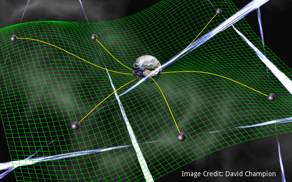

I love all aspects of pulsar astrophysics. Below are some of the projects I am leading or collaborating on.
A Highly Eccentric 3.9 Millisecond Binary Pulsar
We present the Robert C. Byrd Green Bank Telescope discovery of the highly eccentric binary millisecond pulsar PSR J1835-3259A in the Fermi Large Area Telescope-detected globular cluster NGC 6652. Timing over one orbit yields the pulse period 3.89 ms, orbital period 9.25 days, eccentricity ˜ 0.95, and an unusually high companion mass of 0.74 {M}⊙ assuming a 1.4 {M}⊙ pulsar. We caution that the lack of data near periastron prevents a precise measurement of the eccentricity, and that further timing is necessary to constrain this and the other orbital parameters. From tidal considerations, we find that the companion must be a compact object. This system likely formed through an exchange encounter in the dense cluster environment. Our initial timing results predict the measurements of at least two post-Keplerian parameters with long-term phase-connected timing: the rate of periastron advance \dot{ω } ˜ 0\buildrel{\circ}\over{.} 1 yr-1, requiring 1 year of phase connection; and the Einstein delay {γ }{GR} ˜ 10 ms, requiring 2-3 years of timing. For an orbital inclination i\gt 50^\circ , a measurement of {sin}i is also likely. PSR J1835-3259A thus provides an opportunity to measure the neutron star mass with high precision, to probe the cluster environment, and, depending on the nature of the companion, to investigate the limits of general relativity.
Xray-Radio Studies of Pulsars
I study this cool pulsar with x-rays and radio waves.
GBNCC
GBNCC does this and that. I do this and that as part of the GBNCC collaboration.
NANOGrav
NANOgrave does this and that. I do this and that as part of the NANOgrav collaboration.
